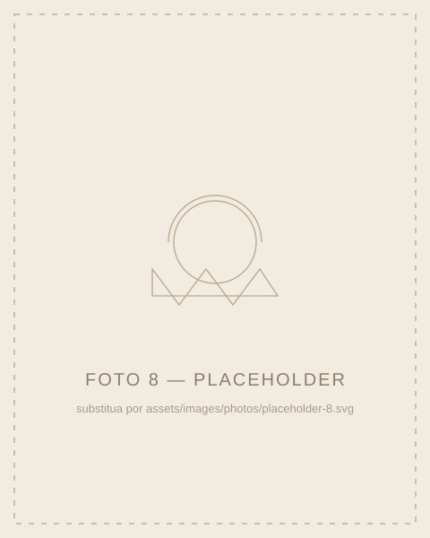

[Escreva aqui a sua frase de abertura]
[Primeiro parágrafo da carta — escreva aqui como tudo começou.]
Você transformou os meus dias em algo que eu não sabia que era possível sentir.
[Parágrafo seguinte — continue a carta. Palavras como exemplo podem receber destaque, sem exagerar na quantidade.]
[Mais um parágrafo — este bloco extra existe apenas como espaço reservado até o texto definitivo chegar.]

[Parágrafo final — feche a carta com o que quiser que ela guarde.]
[Assinatura]